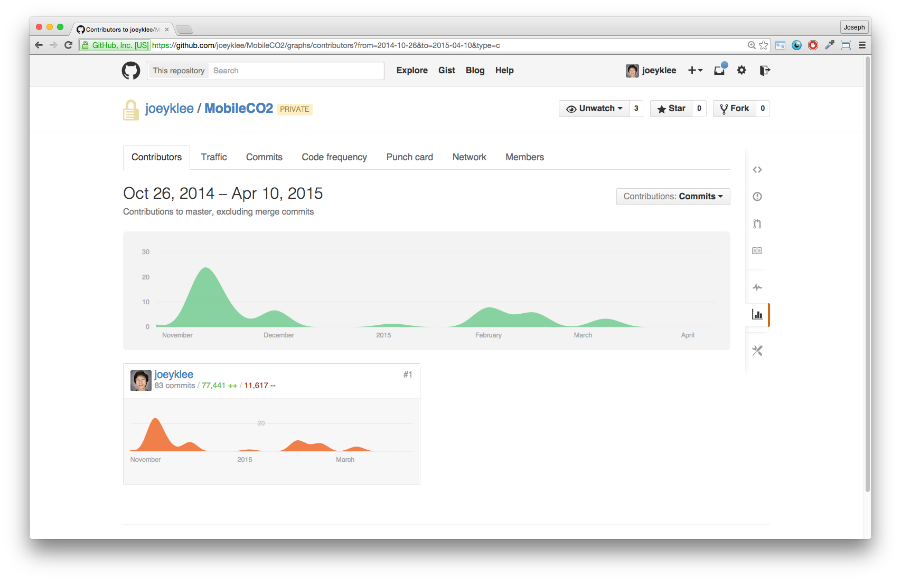
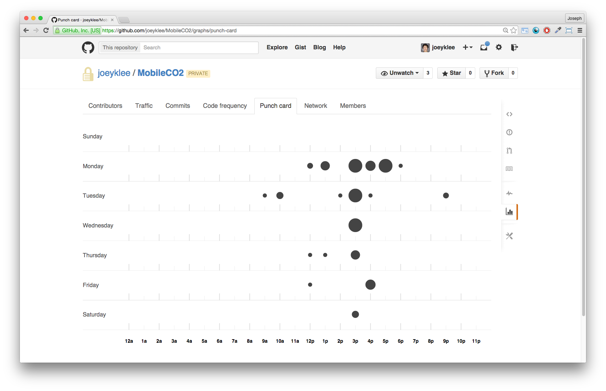
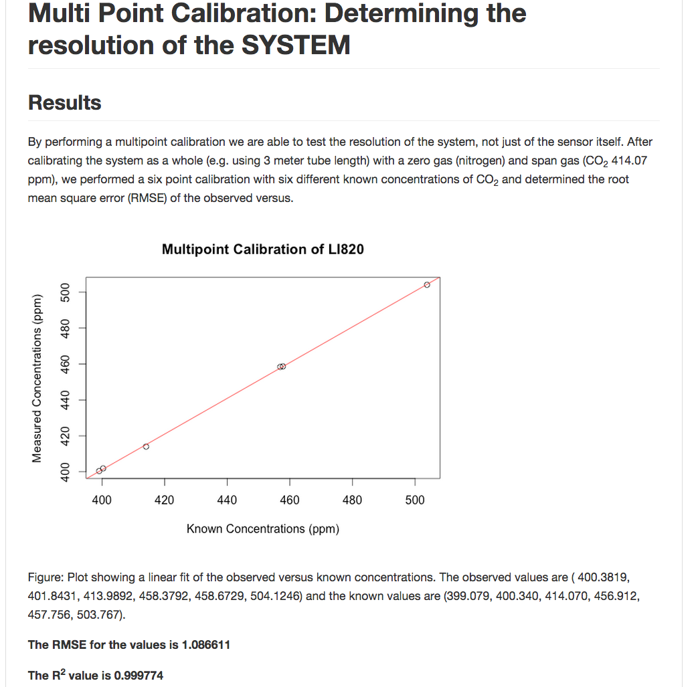

Making Maps and Everything Else
Joey Lee /
@joeyklee
UBC Geography Spring Symposium- April 10, 2015
The slides & links can be found on github:
Prelude
Why am I here?
I'm interested in the cumulative process of making maps:
Data aquisition -->
data mining -->
visualization -->
communication -->
interaction.
It is indeed a process...

...made richer through collaboration.
Ben Fry's Data Viz Pipeline cc/Benedikt Groß
Joey's Master's work (to date)
Enter: Urban Climate Group
Originally came to do modelling and visualization of GHGs in Toronto...
...within the first week at UBC + 1 brainstorming session...
Mobile Sensing of CO2
+
Data Viz
The Question:
Can we map GHGs and other pollutants at high spatial and temporal resolution across the city enabled by new and opensource technologies?
Can we map GHGs and other pollutants at high spatial and temporal resolution across the city enabled by new and opensource technologies?
The Solution:
- 2-year Hackathon including:
- Arduino + IRGA + lots of other parts
- Lots of programming
- 1 internship in Germany
- Web technologies
- Lots of improvisation
- Tons of support from Andreas, Zoran, and Rick + all the geog staff and grad students
- 2-year Hackathon including:
- Arduino + IRGA + lots of other parts
- Lots of programming
- 1 internship in Germany
- Web technologies
- Lots of improvisation
- Tons of support from Andreas, Zoran, and Rick + all the geog staff and grad students
Recap of the last 1.5 years
Making of: CO2 sensor from Joey Lee on Vimeo.
> 70,000 lines of code

Working on the weekends

Testing in the lab

Testing outside

Testing as a team